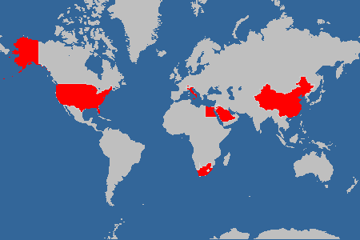
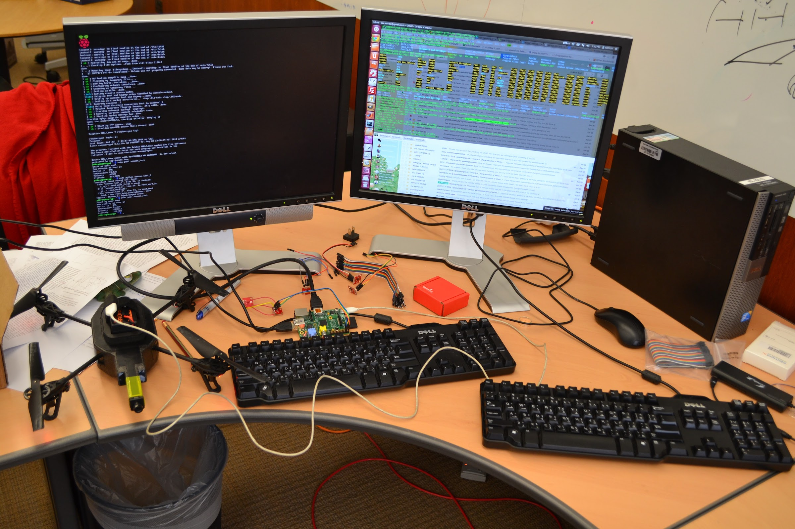
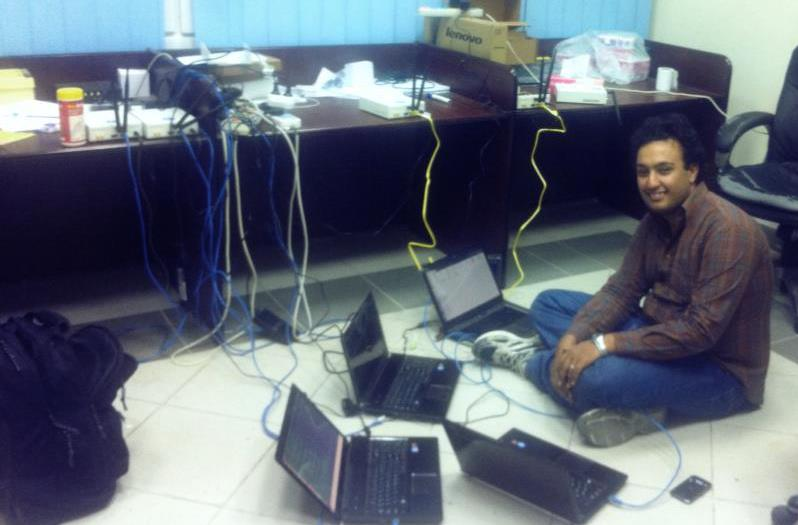

Personal
I enjoy several activities that help keep me balanced like playing squash, swimming, reading, and traveling.
Interesting Reads
I will try to keep the list of interesting things to read updated as I add more books/articles to my library:
Kahneman, Daniel. Thinking, Fast and Slow. Farrar, Straus and Giroux, 2013 [Amazon]
Jay, Meg. The Defining Decade: Why Your Twenties Matter–And How to Make the Most of Them Now. Twelve, 2012. [Amazon]
Feibelman, Peter J. PhD Is Not Enough!: A Guide to Survival in Science(Second Edition edition). Basic Books, 2011. [Amazon]
Hamming, Richard. “You and Your Research”. [URL]
Non-Technical Talks by David Patterson, U.C. Berkeley. [URL]
My World Footprint
|  |
I visited China, Egypt, Italy, Jordan, Lebanon, Saudi Arabia, South Africa, Switzerland, USA, and Qatar.
Create your own visited map of The World
Where The Hell Are We? By Egyptians (Inspired by “Where The Hell Is Matt?”) - I am Beijing and Doha :)
Behind the Scenes of Scientific Experiments
 |
My wife, who supported me and tagged along through 800 miles of wardriving, in an experiment-ready car. The backseat was turned into a housing for a spectrum analyzer, a laptop, and a bunch of spectrum sensors. The antenna were fitted on top of the car. Work based on this wardriving got published in ICDCS’17. |
|  | Initial experiments for using Raspberry Pis as external drone controllers to improve the drone's sensory inputs. We ended up using Intel Edison because of their smaller from factor. The work got published in IPSN’17, MASS’14, and WiMob’14. |
|  | Experiments with USRPs in preparation for DARPA spectrum challenge and constructing a testbed that was published in ICC’13. |